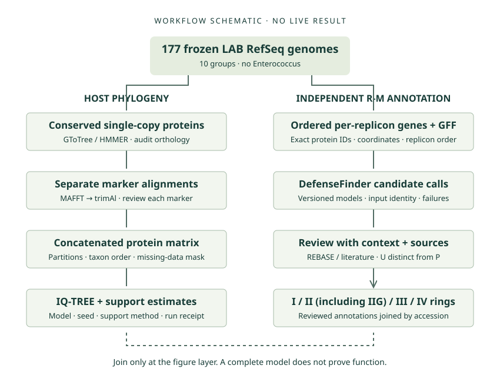

THE LAB PHYLOGENOMICS WORKSPACE
From frozen genomes
to reviewable evidence.
A working reference for the host tree, independent R-M annotation, and the human decisions between them.
THE SCIENTIFIC CONTRACT
Same genomes.
Different questions.
Conserved single-copy proteins establish host relationships. Ordered genes and GFF establish the context for R-M review.
Explore the two chainsCURRENT EVIDENCE BOUNDARY
No live biological result is certified here.
Prior journals are historical claims. A failed or missing measurement is unknown, not absence. Uploaded JSON remains user-supplied.
Inspect probe snapshots →The 177-accession file is checked locally. Group assignments and sequence content are not revalidated by that check.
Native ChatGPT Site: BLOCKED for delivery. Tools are exposed. Saving a version requires a source push; publication and pushes are held for parent review. GitHub Pages is a separate target.
CAPABILITY IS NOT EXECUTION
Tool registry
Each dimension stands alone. “Yes” applies only to its cited scope; installation or authentication never implies execution.
INPUT → TRANSFORMATION → TEST GATE → FIGURE
Two chains. One panel.
This is a workflow diagram, not an inferred phylogeny or a result ring.

On narrow screens, scroll the diagram horizontally. The complete steps are also listed as text below.
Host-tree gates
- Check exact accession versions, FASTA records and nonempty proteins. Inventory every genome; failure stays visible.
- Extract conserved single-copy markers with GToTree/HMMER. Audit identity, occupancy, duplicates and paralogs.
- Align each homologous marker separately with MAFFT; review trimAl trimming and missing-data masks.
- Concatenate accepted protein alignments with a partition map. Check taxon order and matrix dimensions.
- Infer with IQ-TREE. Record model, seed, versions and support method/settings. Review support before exporting a host tree.
Not all proteins are homologous. Do not align the whole proteome as one marker.
R-M annotation gates
- Retain exact protein IDs and ordered genes per replicon; link to matching GFF coordinates.
- Run DefenseFinder separately; retain model version, hits, gene order, replicon and input identity.
- Review candidate systems with domain/context evidence, REBASE and literature. Track reviewer and uncertainty.
- Assign I / II (including IIG) / III / IV rings only from reviewed calls; join to tree tips using accession IDs.
Missing/failed ≠ absence. Unreviewed U ≠ curated partial P. Complete model ≠ biochemical function.
BioNeMo, structure prediction and regulatory models are optional investigations. They do not replace the LAB host-tree or R-M pipelines.
BOUNDED SNAPSHOTS, EXPLICIT SOURCES
Actual probes
Parent observations below are attributed to the task handoff. Their original timestamps and receipts were not supplied; these are not independent reprobes.
Local sanitized probe record
Loading snapshot availability…
The parent may update public-probes.json. The read-only sync command stages a validated snapshot for this static site; no live device connection occurs.
Inspect an untrusted JSON file
Registry or probe schema v1 · maximum 100,000 bytes · text only. Claims stay in this separate inspection area. Do not include credentials or private identifiers.
No user-supplied document loaded.
PREPARE → REVIEW → EXTERNAL EXECUTION → RECEIPT
Delegation / confirmation
Prepare a portable job request. A click does not execute work, grant permissions or certify a run.
Prepared request · not executed
THE REVIEW CHEATBOOK
Decisions that travel
with the evidence.
Keep scientific states distinct
U = unreviewed candidate. P = curated partial system with reviewer evidence. Missing input, failed analysis and no reviewed call all remain distinct from curated absence. A complete computational model does not prove biochemical activity or a recognition motif.
Freeze the panel before joining figures
Use versioned RefSeq accession IDs as join keys. Require exactly 177 unique entries. Ten operational groups and the Enterococcus exclusion come from the frozen sampling journal; the accession-only file cannot independently prove taxonomy.
Separate prior claims from this run
Main STATUS describes an earlier sampling state. The later Stage 1 journal reports the accepted 177 panel. PR27 reports synthetic inventory regression work, not a live tree. PR28 reports an earlier atlas and browser checks, not this site's tests or deployment.
Promote evidence only after independent review
Tool exposure, plugin files and login states are different dimensions. A successful shell probe proves only that bounded probe. Importing a receipt does not verify it. Record source hashes, exact commands, versions, exit codes, reviewer decisions and tested scope.
Respect optional models and third-party licenses
BioNeMo and AlphaGenome remain links and review topics here. No vendor code, models, weights or licensed documentation is bundled. Each vendor's current repository, model and service terms must be reviewed separately. The MIT license covers this suite's original code only.
SMALL, INSPECTABLE, PORTABLE
Downloads
Review source identity and claims before handing work to another environment.
Frozen accession list
177 versioned RefSeq IDs. No genome sequences.
Download TXTTool registry
Bundled, attributed capability snapshot. Importing it elsewhere does not establish trust.
Download JSONSource / probe manifest
Commit-pinned public sources and source byte hashes.
Source manifestProbe manifest
Schema examples
Accepted registry/probe shapes and blank claims.
Import exampleRegistry schema
Probe schema
Execution receipt schema
Prepare job request →